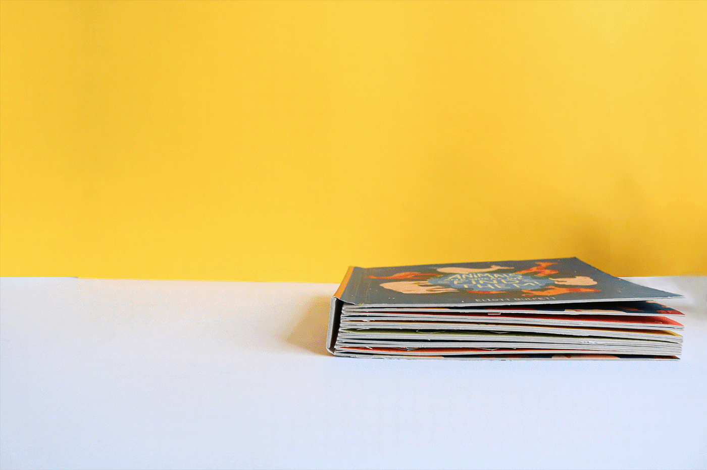

第一部・狹義相對論第一章 狹義相對論
1.1 光的幾何化、世界的幾何化
看 YouTube 影片時，YouTuber 活在二維的平面裡，加上一條播放時間軸，就成了三維時空。這就是翻頁書（flip book）：許多張二維照片完全重疊，每張只差一點點，快速翻過去就變成影片。所謂的時間軸，只是頁數，也許根本不存在時間。
光也在書裡：每翻一頁，光前進固定的距離。光速 \(c\) 只是「平面距離」與「頁數」之間的換算常數——頁數乘上 \(c\)，就是距離。這是光的幾何化。每翻一頁，任何東西最多只能走這麼遠。這道上限像一個被人寫死的參數——也許世界是虛擬的，寫死它，是怕它失控崩潰。
我們的三維空間，其實是一本立體的翻頁書（pop-up flip book）：每一頁不是一張照片，而是一整個三維世界。這是世界的幾何化。

Einstein 提出兩個假設：
相對性原理：物理定律在所有慣性基準（不加速的觀察者）中形式相同。
光速不變：真空中光速 \(c\) 對所有慣性觀察者都相同，與光源或觀察者的運動無關。
第二條是實驗事實（Michelson–Morley 實驗測不到任何方向的光速差異）。 它與「速度相加」的日常直覺矛盾，所以時間與空間的觀念必須修改。以下逐一算出要修改成什麼樣子。
1.2 時間膨脹：向車頂發射的光
電車地板有光源，向正上方的天花板鏡子發光，光反射回地板。地板到鏡子高度為 \(L\)。
車上基準：光直上直下，來回耗時 \(\dfrac{2L}{c}\)。
地上基準：光來回期間電車在移動，所以光走的是斜線，總路徑比 \(2L\) 長。 光速仍是 \(c\)，路徑較長，耗時就比 \(\dfrac{2L}{c}\) 長。
算出到底耗時多久。由上圖，光爬升 \(L\) 需時：
$$ T = \frac{L}{\sqrt{c^2-v^2}} = \frac{L}{c}\,\frac{1}{\sqrt{1-\left(\frac{v}{c}\right)^2}} $$車上經過 \(\dfrac{L}{c}\) 的時間，地上就經過它的 \(\dfrac{1}{\sqrt{1-(v/c)^2}}\) 倍。 這個因子之後不斷出現，記作：
$$ \boxed{\;\gamma \equiv \frac{1}{\sqrt{1-\left(\frac{v}{c}\right)^2}} \;>\; 1\;} $$同一個現象，地上基準測得的時間比車上基準長 \(\gamma\) 倍——運動中的時鐘走得慢。
1.3 長度收縮
列車以 \(v\) 掠過地面上相距 \(L_{\text{地}}\) 的兩點。 速度＝長度／時間，而這個相對速度，車上與地上測得的大小必須相同：
$$ v = \frac{L_{\text{地}}}{T_{\text{地}}} = \frac{L_{\text{車}}}{T_{\text{車}}} $$「經過甲點」與「經過乙點」兩個事件都發生在車頭同一位置， 車上的鐘正是 1.2 節走得慢的那個：\(T_{\text{車}} = T_{\text{地}}/\gamma\)。 分母變小，分子必須跟著變小，比值才能不變：
$$ \boxed{\;L_{\text{車}} = \frac{L_{\text{地}}}{\gamma} = \sqrt{1-\left(\frac{v}{c}\right)^2}\; L_{\text{地}}\;} $$運動中的觀察者測地面的長度，縮短 \(1/\gamma\) 倍；由相對性原理，地上測運動中的列車也一樣短 （沿運動方向；垂直方向不變）。合併 1.2 與 1.3： 有相對速度，看對方在做慢動作，而且看扁他。
1.4 Lorentz 變換
事件在基準 1 的座標為 \((x,\ t)\)，在基準 2（以 \(v\) 前進）的座標為 \((x',\ t')\)。 用 1.3、1.2 的結論直接組出換算式。
第一式（長度收縮）：在基準 2 的時刻 \(t'\)，地面原點位於 \(-vt'\)， 所以事件離地面原點的距離，用基準 2 的尺量是 \(x' + vt'\)。 但這段距離在地面上的長度是 \(x\)，而基準 2 看地面的長度縮短 \(1/\gamma\) 倍（1.3 節）：
$$ x' + vt' = \frac{x}{\gamma} \qquad\Longrightarrow\qquad x = \gamma\,(x' + vt') $$第二式（對稱性）：把時間乘上 \(c\) 寫成 \(ct\)，單位就是距離—— 時間和位置是同一種量，\(c\) 只是換算常數。第一式即
$$ x = \gamma\left(x' + \tfrac{v}{c}\cdot ct'\right) $$光速不變說：\(x = ct\) 與 \(x' = ct'\) 是同一條光——\(x\) 與 \(ct\) 地位完全對稱。 把第一式的 \(x \leftrightarrow ct\)、\(x' \leftrightarrow ct'\) 互換，式子必須照樣成立，直接得：
$$ ct = \gamma\left(ct' + \tfrac{v}{c}\cdot x'\right) $$（驗證：代入 \(x' = ct'\)，兩式右邊相等，得 \(x = ct\)——光在兩個基準都是光速。）
第二式除以 \(c\) 還原回 \(t\)，整理：
$$ \boxed{\;x = \gamma\,(x' + v t'), \qquad t = \gamma\left(t' + \frac{v}{c^2}\,x'\right)\;} $$這就是Lorentz 變換。反變換把 \(v\) 換成 \(-v\)：
$$ x' = \gamma\,(x - v t), \qquad t' = \gamma\left(t - \frac{v}{c^2}\,x\right) $$1.2 的時間膨脹是特例：取 \(x' = 0\)，得 \(t = \gamma t'\)。 當 \(v \ll c\) 時 \(\gamma \to 1\)、\(\frac{v}{c^2}x' \to 0\)，退回伽利略變換 \(x = x' + vt\)、\(t = t'\)。
1.5 新的速度合成則
物體從原點出發等速運動，基準 1 測得速度 \(v = \dfrac{x}{t}\)， 基準 2 測得 \(v' = \dfrac{x'}{t'}\)，基準間速度為 \(v_0\)。將 Lorentz 變換代入：
$$ v = \frac{x}{t} = \frac{\gamma(x' + v_0 t')}{\gamma\left(t' + \frac{v_0}{c^2}x'\right)} = \frac{\frac{x'}{t'} + v_0}{1 + \frac{v_0}{c^2}\frac{x'}{t'}} $$ $$ \boxed{\;v = \frac{v' + v_0}{1 + \dfrac{v' v_0}{c^2}}\;} $$這條式子取代 \(v = v' + v_0\)。驗證三種情況：
日常速度：\(v', v_0 \ll c\) 時分母趨近 1，回到 \(v = v' + v_0\)。 日常生活察覺不到差異，理所當然。
光：代入 \(v' = c\)：
$$ v = \frac{c + v_0}{1 + \frac{v_0}{c}} = \frac{(c+v_0)\,c}{c + v_0} = c $$不論 \(v_0\) 多大，結果都是 \(c\)——光速不變被公式自動保證。
高速疊加：以 \(0.9c\) 行駛的電車上，把球以 \(0.9c\)（相對電車）向前丟。地上看：
$$ v = \frac{0.9c + 0.9c}{1 + 0.9^2} = \frac{1.8c}{1.81} \approx 0.994c $$怎麼疊都不會超過 \(c\)。
1.6 動量不守恆？
質量同為 \(m\) 的 A、B 以速率 \(v\) 相向飛來，正面對撞後黏成一體 C（質量 \(M\)）。 左右對稱，C 必定靜止。
換到跟著 B 移動的基準（記 \('\)，B 靜止）：
相對論之前，速度直接相加： \(v'_{A} = 2v\)、\(v'_{C} = v\)，動量 \(p = mv\) 的守恆式為
$$ m\,(2v) = M\,v \qquad\Longrightarrow\qquad M = 2m $$動量守恆順便給出質量守恆。但 1.5 節已經知道速度不能直接相加，真正的速度是
$$ v'_{A} = \frac{2v}{1+\left(\frac{v}{c}\right)^2}\,, \qquad v'_{C} = v $$代回守恆式：\(m\,v'_{A} = Mv\)。若 \(M = 2m\)，左邊小於右邊，等號不成立。 我們選擇保住守恆律——這只是人類的假設，不然沒有抓手——於是 \(p = mv\) 這個定義非修不可。
1.7 動量的修正
設修正後的動量為
$$ p = k(v)\, m v $$\(k\) 是所有物體共用的修正函數，\(k(0) = 1\)。 \(k\) 無單位，所以它只能依賴無單位的 \(\frac{v}{c}\)；\(v \ll c\) 時 \(k \approx 1\)，回到牛頓。 B 基準的動量守恆式變成
$$ k(v'_{A})\, m\, v'_{A} = k(v)\, M v \tag{1} $$缺 \(M\)。讓整場對撞多帶一個縱向速度—— 換到往下以 \(u\) 移動的基準，所有東西多了向上的 \(u\)：
共同漂移 \(u\) 給每個縱向動量乘上同一個因子 \(k(u)\)，其餘由橫向速率決定：
$$ \begin{aligned} \text{A}&:\ k(u)\,k(v)\,mu\\ \text{B}&:\ k(u)\,k(v)\,mu\\ \text{C}&:\ k(u)\,k(0)\,Mu = k(u)\,Mu \end{aligned} $$縱向動量守恆：
$$ k(u)\,k(v)\,mu + k(u)\,k(v)\,mu = k(u)\,Mu $$兩邊除以 \(k(u)\,u\)：
$$ 2\,k(v)\, m = M \tag{2} $$把 \(v'_{A} = \dfrac{2v}{1+\left(\frac{v}{c}\right)^2}\) 與 (2) 的 \(M = 2k(v)m\) 代入 (1)：
$$ k(v'_{A})\; m\;\frac{2v}{1+\left(\frac{v}{c}\right)^2} \;=\; k(v)\cdot 2k(v)m \cdot v $$兩邊除以 \(2mv\)：
$$ \frac{k(v'_{A})}{1+\left(\frac{v}{c}\right)^2} = k(v)^2 \qquad\Longrightarrow\qquad k(v'_{A}) = k(v)^2\left(1+\left(\tfrac{v}{c}\right)^2\right) \tag{3} $$還差一條。B 基準看到的這場對撞，是「A 以 \(v'_{A}\) 撞上靜止的 B，合成 C 以 \(v\) 前進」—— 對它重施故技：全體共同帶上縱向的 \(u\)，橫向照舊。
縱向動量守恆：
$$ k(u)\,k(v'_{A})\,mu + k(u)\,k(0)\,mu = k(u)\,k(v)\,Mu $$兩邊除以 \(k(u)\,mu\)，再用 (2) 的 \(M = 2k(v)m\)：
$$ k(v'_{A}) + 1 = k(v)\,\frac{M}{m} = 2k(v)^2 \qquad\Longrightarrow\qquad k(v'_{A}) = 2k(v)^2 - 1 \tag{4} $$(3)、(4) 聯立，消去 \(k(v'_{A})\)：
$$ 2k(v)^2 - 1 = k(v)^2\left(1+\left(\tfrac{v}{c}\right)^2\right) \qquad\Longrightarrow\qquad k(v)^2\left(1-\left(\tfrac{v}{c}\right)^2\right) = 1 $$ $$ k(v) = \frac{1}{\sqrt{1-\left(\frac{v}{c}\right)^2}} = \gamma \qquad\Longrightarrow\qquad \boxed{\;p = \gamma m v\;} $$修正函數不多不少，正是 1.2 節的 \(\gamma\)。 順帶 (2) 說 \(M = 2\gamma m > 2m\)：合體後的質量比 \(2m\) 大—— 動量守恆保住了，質量守恆沒有。
1.8 能量的修正
1.7 節的結尾：\(M = 2\gamma m\)，質量守恆破了。這個 \(\gamma m\) 到底是啥？ 把 \(\gamma\) 逐項展開看看：
$$ \gamma = \frac{1}{\sqrt{1-\left(\frac{v}{c}\right)^2}} = 1 + \tfrac12\left(\tfrac{v}{c}\right)^2 + \tfrac38\left(\tfrac{v}{c}\right)^4 + \tfrac{5}{16}\left(\tfrac{v}{c}\right)^6 + \cdots $$ $$ \gamma m = m + \frac{\tfrac12 m v^2}{c^2} + \frac{\tfrac38 m v^4}{c^4} + \cdots $$第二項的分子是牛頓動能 \(\tfrac12 mv^2\)，卻整個被 \(c^2\) 除著——怪怪的。 那就兩邊乘上 \(c^2\)（一切都是人類的嘗試，不神聖）：
$$ \gamma m c^2 = mc^2 + \tfrac12 m v^2 + \tfrac38\, \frac{m v^4}{c^2} + \cdots $$順眼了：第二項正是牛頓動能，後面的項是高速修正（\(v \ll c\) 時小到可忽略）； 第一項與運動無關——物體光是存在，就帶著 \(mc^2\)。 於是 \(M = 2\gamma m\) 兩邊乘上 \(c^2\)，猜測這可能是能量：
$$ Mc^2 = \gamma m c^2 + \gamma m c^2 $$「動能＋一筆固定存款」——人類目前猜測，這個量就是能量：
$$ \boxed{\;E = \gamma m c^2\;} \qquad\qquad v = 0:\ \boxed{\;E_0 = mc^2\;} $$1.9 動量與能量的關係
手上兩條式子，都含著隨基準而變的 \(v\)：
$$ E = \gamma m c^2, \qquad p = \gamma m v $$把 \(v\) 消掉。平方相減，用 \(\gamma^2\left(1-\frac{v^2}{c^2}\right) = 1\)：
$$ E^2 - (pc)^2 = \gamma^2 m^2 c^4 - \gamma^2 m^2 v^2 c^2 = \gamma^2 m^2 c^4 \left(1 - \frac{v^2}{c^2}\right) = (mc^2)^2 $$ $$ \boxed{\;E^2 - (pc)^2 = (mc^2)^2\;} $$\(E\) 與 \(p\) 各自隨基準改變，但這個組合卻對所有基準都是同一差——\(mc^2\) 的平方。
改成相除，消掉的就是質量：
$$ \frac{E}{pc} = \frac{\gamma m c^2}{\gamma m v c} \qquad\Longrightarrow\qquad \boxed{\;\frac{E}{pc} = \frac{c}{v}\;} $$這兩條框起來的式子裡沒有 \(\gamma\)，所以連 \(v = c\) 都能用——比 \(E = \gamma mc^2\)、\(p = \gamma mv\) 更廣。 代 \(m = 0\) 進第一條：\(E = pc\)；再代進第二條：\(\frac{c}{v} = \frac{E}{pc} = 1\)—— 質量為零的粒子照樣有能量與動量，但被迫永遠以光速跑，這是否暗示就是光子？ 反過來，\(v = c \Rightarrow E = pc \Rightarrow m = 0\)：這是否暗示以光速跑的東西必定沒有質量？
低速檢查：把第一條開根號、逐項展開（\(\sqrt{1+x} = 1 + \tfrac12 x - \tfrac18 x^2 + \cdots\)）：
$$ E = mc^2\sqrt{1+\left(\tfrac{p}{mc}\right)^2} = mc^2 + \frac{p^2}{2m} - \frac{p^4}{8m^3c^2} + \cdots $$第二項正是牛頓動能的動量寫法 \(\dfrac{p^2}{2m}\)，其後是高速修正。
第二部・廣義相對論第二章 廣義相對論
2.1 複習：Doppler 效應
聲音在空氣中以 \(v\) 傳播。波源每秒發出 \(f_0\) 個波前，相鄰波前相距
$$ \lambda = \frac{v}{f_0} $$波源以 \(v_s\) 朝觀察者移動：相鄰波前發出相隔 \(\dfrac{1}{f_0}\)， 其間前一個波前走 \(\dfrac{v}{f_0}\)，波源前進 \(\dfrac{v_s}{f_0}\)：
$$ \lambda' = \frac{v}{f_0} - \frac{v_s}{f_0} = \frac{v - v_s}{f_0} \qquad\Longrightarrow\qquad f = \frac{v}{\lambda'} = \frac{v}{(v - v_s)/f_0} = f_0\,\frac{v}{v - v_s} $$觀察者以 \(v_o\) 朝波源移動：波前間距仍是 \(\lambda\)，但以 \(v + v_o\) 掠過觀察者：
$$ f = \frac{v + v_o}{\lambda} = f_0\,\frac{v + v_o}{v} $$兩者同時發生：觀察者以 \(v + v_o\) 掠過壓縮後的 \(\lambda'\)：
$$ f = \frac{v + v_o}{\lambda'} = f_0\,\frac{v + v_o}{v - v_s} $$遠離時 \(v_s \to -v_s\)、\(v_o \to -v_o\)。合併寫成（靠近取上號、遠離取下號）：
$$ \boxed{\; f = f_0\,\frac{v \pm v_o}{v \mp v_s} \;} $$2.2 加速的火箭：上下的鐘
火箭以加速度 \(a\) 向上加速，底到頂高 \(h\)。底部每隔 \(T_{\text{下}}\) 向上發一道光， 頂部每隔 \(T_{\text{上}}\) 收到一道。\(T_{\text{上}}\) 是多少？
【方法一】
火箭在加速，不是慣性基準——發光那一刻火箭速度為 \(v\)。 光飛到頂部需時 \(\Delta T\)：光走了 \(c\,\Delta T\)，頂部跑了 \(v\,\Delta T + \tfrac12 a\,\Delta T^2\)，兩者之差是 \(h\)：
$$ h = c\,\Delta T - v\,\Delta T - \tfrac12 a\,\Delta T^2 $$最後一項極小，丟掉：
$$ (c - v)\,\Delta T = h \qquad\Longrightarrow\qquad \Delta T = \frac{h}{c - v} $$這條式子在相對論裡成立嗎？速度不是不能直接相加？——1.5 的合成則管的是換基準： 同一個物體，基準 1 量到 \(v\)、基準 2 量到 \(v'\)，兩者怎麼換。這裡沒有換基準： 光的位置 \(c\,\Delta T\)、頂部的位置 \(h + v\,\Delta T + \tfrac12 a\,\Delta T^2\)， 全是同一個慣性基準、同一套鐘尺量出來的座標，「光追上頂部」就是兩個座標相等，座標相減是純算術。 \(c - v\) 也不是任何東西的速度，是間距縮小的速率——這種量本來就可以超過 \(c\)（兩道光對開，間距以 \(2c\) 縮小，完全合法）。
這段時間頂部被加速，收到光時速度為 \(v + a\dfrac{h}{c - v}\)。
套 Doppler 公式——波源以 \(v\) 朝觀察者、觀察者以 \(v + a\dfrac{h}{c - v}\) 遠離：\(f = f_0\,\dfrac{c - v_o}{c - v_s}\)。 代 \(v_s = v\)、\(v_o = v + a\dfrac{h}{c - v}\)、\(f_0 = \dfrac{1}{T_{\text{下}}}\)、\(f = \dfrac{1}{T_{\text{上}}}\)：
$$ \frac{1}{T_{\text{上}}} = \frac{1}{T_{\text{下}}}\,\frac{c - v - a\dfrac{h}{c - v}}{c - v} = \frac{1}{T_{\text{下}}}\left(1 - \frac{ah}{(c - v)^2}\right) $$逐項展開 \(\dfrac{1}{1-x} = 1 + x + x^2 + \cdots\)：
$$ \frac{ah}{(c - v)^2} = \frac{ah}{c^2}\cdot\frac{1}{\left(1 - \frac{v}{c}\right)^2} = \frac{ah}{c^2}\left(1 + \frac{v}{c} + \left(\frac{v}{c}\right)^2 + \cdots\right)^2 = \frac{ah}{c^2} + 2\,\frac{ah}{c^2}\cdot\frac{v}{c} + \cdots $$第二項起都是 \(\dfrac{ah}{c^2}\) 再乘上 \(\dfrac{v}{c}\) 的次方——火箭速度太慢，全部丟掉：
$$ \frac{1}{T_{\text{上}}} = \frac{1}{T_{\text{下}}}\left(1 - \frac{ah}{c^2}\right) \qquad\Longrightarrow\qquad T_{\text{上}} = \frac{T_{\text{下}}}{1 - \dfrac{ah}{c^2}} $$逐項展開 \(\dfrac{1}{1-x} = 1 + x + x^2 + \cdots\)，留一次項：
$$ T_{\text{上}} = T_{\text{下}}\left(1 + \frac{ah}{c^2} + \left(\frac{ah}{c^2}\right)^2 + \cdots\right) \qquad\Longrightarrow\qquad \boxed{\; \frac{T_{\text{上}} - T_{\text{下}}}{T_{\text{下}}} = \frac{ah}{c^2} \;} $$【方法二】
不套 Doppler，直接追兩道光。第一道光需時 \(\dfrac{h}{c - v}\)（同上）； 第二道光晚 \(T_{\text{下}}\) 發出，火箭速度已是 \(v + a\,T_{\text{下}}\)，需時 \(\dfrac{h}{c - v - a\,T_{\text{下}}}\)。 第二道光晚 \(T_{\text{下}}\) 出發、又多了兩段飛行時間之差，頂部收到的間隔：
$$ T_{\text{上}} = T_{\text{下}} + \frac{h}{c - v - a\,T_{\text{下}}} - \frac{h}{c - v} = T_{\text{下}} + \frac{h\,(c - v) - h\,(c - v - a\,T_{\text{下}})}{(c - v - a\,T_{\text{下}})(c - v)} = T_{\text{下}} + \frac{a\,h\,T_{\text{下}}}{(c - v)(c - v - a\,T_{\text{下}})} $$ $$ \frac{T_{\text{上}} - T_{\text{下}}}{T_{\text{下}}} = \frac{ah}{(c - v)(c - v - a\,T_{\text{下}})} = \frac{ah}{c^2}\cdot\frac{1}{1 - \dfrac{v}{c}}\cdot\frac{1}{1 - \dfrac{v + a\,T_{\text{下}}}{c}} $$兩個因子各逐項展開 \(\dfrac{1}{1-x} = 1 + x + x^2 + \cdots\)：
$$ \frac{T_{\text{上}} - T_{\text{下}}}{T_{\text{下}}} = \frac{ah}{c^2}\left(1 + \frac{v}{c} + \left(\frac{v}{c}\right)^2 + \cdots\right)\left(1 + \frac{v + a\,T_{\text{下}}}{c} + \left(\frac{v + a\,T_{\text{下}}}{c}\right)^2 + \cdots\right) = \frac{ah}{c^2} + \frac{ah}{c^2}\cdot\frac{v}{c} + \frac{ah}{c^2}\cdot\frac{v + a\,T_{\text{下}}}{c} + \cdots $$第二項起都是 \(\dfrac{ah}{c^2}\) 再乘上火箭速度除以 \(c\)，丟掉：
$$ \frac{T_{\text{上}} - T_{\text{下}}}{T_{\text{下}}} = \frac{ah}{c^2} $$與方法一相同。
\(T_{\text{上}} - T_{\text{下}} > 0\)，所以 \(T_{\text{上}} > T_{\text{下}}\)。
上面已經到了第 10 秒了，下面怎麼才到了 8 秒，才剛傳來第 8 秒的時針反射光！
這與 1.2「運動中的鐘慢」不同——兩個鐘之間沒有相對速度——是加速度帶來的新機制。
對比的基準點在哪裡？取決於把「測量起點（原點）」設在火箭的哪裡。
1. 關鍵在於公式裡的那個「1」
$$ T_{\text{上}} = T_{\text{下}}\left(1 + \frac{ah}{c^2}\right) $$「1」完全等同於沒有加速度（\(a = 0\)，等速火箭）時的標準時間流速；\(\dfrac{ah}{c^2}\) 是加速度 \(a\) 與高度差 \(h\) 帶來的修正。 推導時以火箭底部為原點（\(h = 0\)），底部的公式就是
$$ T = T_{\text{標準}} \times (1 + 0) = T_{\text{標準}} $$有加速度的火箭底與沒有加速度的火箭底，鐘的走速（底片張數密度）一樣；頂部 \(h > 0\)，底片張數變多（時間變快）。
2. 如果把基準點改設在「火箭中心」呢？
原點可以自由選擇。火箭高 100 公尺，把正中間（50 公尺處）設為原點（\(h = 0\)）：中心的走速與無加速火箭底片張數一樣（時間流速一樣），頂部（100 公尺處，\(h = 50\)）底片張數變多（時間變快），底部（0 公尺處，\(h = -50\)）底片張數變少（時間變慢）。把基準原點設在哪裡，在物理學上稱為「局部慣性系」的選擇。
2.3 引力幾何化。人類的猜測：加速度＝重力
站在地面，腳底被地面頂著；站在 2.2 那艘以 \(a = g\) 加速的火箭裡，腳底一樣被地板頂著。關在艙裡，分不出兩者—— 人類於是猜測：加速度與重力是同一件事（等效原理，Einstein 1907）。這只是猜測，不然沒有抓手。
把 2.2 的 \(a\) 換成 \(g\)：
$$ \boxed{\; \frac{T_{\text{上}} - T_{\text{下}}}{T_{\text{下}}} = \frac{gh}{c^2} \;} $$高處的鐘比低處快——實驗事實：1960 年 Pound 與 Rebka 在 22.5 m 的塔裡用 Fe-57 原子核發出的光量到這個差，吻合到 10%； 之後從一萬公里高的衛星（1976，\(7\times10^{-5}\)）到 33 cm（2010）、1 mm 高的原子雲（2022），六十多年沒有一次偏離 \(\dfrac{gh}{c^2}\)。 GPS 衛星的鐘在高處每天比地面快 45 μs（運動的鐘慢 7 μs，淨快 38 μs），不修正，定位每天累積十公里誤差。
【引力幾何化的最簡例：光往下彎】
一道光水平前進，波前上下兩端高度差 \(h\)。以下端的鐘為準：下端過 1 秒，上端已經過了 \(1 + \dfrac{gh}{c^2}\) 秒，多 \(\dfrac{gh}{c^2}\) 秒。 兩端各自量到的光速都是 \(c\)，所以這 1 秒裡上端的光走了 \(c\left(1 + \dfrac{gh}{c^2}\right)\)，比下端多 \(c\,\dfrac{gh}{c^2}\)—— 波前上端跑得多、下端跑得少，整個波前向下轉。光線垂直於波前，所以光往下彎。
波前轉動的角速度＝上下端速度差除以 \(h\)：
$$ \frac{c\,\dfrac{gh}{c^2}}{h} = \frac{g}{c} $$每秒偏轉 \(\dfrac{g}{c}\)。一顆以速度 \(c\) 水平丟出的石頭，垂直速度每秒增加 \(g\)，方向每秒也偏 \(\dfrac{g}{c}\)——一模一樣。 推導裡沒有任何「力」，只用了不同高度的時間走速不同，光就往下彎。引力是否根本不是力，而是時空的形狀？——這是「引力幾何化」的猜測。
2.4 E = hν 的能量幾何化
翻書讓光宏觀上等速前進；但光其實是螺旋式前進——相位螺旋式變化。每翻幾頁書，螺旋一次。
半徑尖端的螺旋，就涉及速度方向的變化，就是加速度。
因為時空的形狀，光可以對自己產生加速度；如果把產生這個加速度的能力向外輸出，就是對外作功。
人類量測到的是：
$$ E = h\,\nu $$2.5 質量、能量、電荷的幾何化
【質量能量化：沒有質量的質量】
兩道能量各為 \(E\) 的光反向對飛，關在一個無質量的盒子裡。盒子整體：能量 \(2E\)，動量 \(\dfrac{E}{c} - \dfrac{E}{c} = 0\)（1.9：光的 \(E = pc\)）。 代入 1.9 的 \(E^2 - (pc)^2 = (Mc^2)^2\)：
$$ (2E)^2 - 0 = (Mc^2)^2 \qquad\Longrightarrow\qquad M = \frac{2E}{c^2} $$裡面沒有任何有質量的東西，盒子卻有質量——推它會抗拒，放在地上會有重量。
這不是空想，是量得到的事實。質子由夸克與膠子組成：膠子沒有質量，三個夸克的靜止質量合計只佔質子質量的 1%，剩下的 99% 是關在裡面的運動能與場能（格點 QCD，2018）。 你身上絕大部分的重量，就是這種沒有質量的質量。
反過來的過程也量得到。質子與中子結合成氘核時，放出一顆能量 2.224 MeV 的光，氘核就比兩者相加輕了這麼多。 2005 年的實驗一邊用光的波長量能量、一邊用離子在磁場中的迴旋頻率量質量，兩邊核對 \(E = mc^2\)，差距不到 0.00004%。
【位能幾何化的最簡例：位能就是鐘的快慢】
一顆質量 \(m\) 的石頭抬高 \(h\)，位能多了 \(mgh\)。拆開來寫：
$$ mgh = mc^2\cdot\frac{gh}{c^2} $$\(mc^2\) 是 1.8 的靜止能量；\(\dfrac{gh}{c^2}\) 是 2.2 的結果，上端的鐘每秒比下端多走的秒數。石頭在高處的總能量：
$$ mc^2 + mgh = mc^2\left(1 + \frac{gh}{c^2}\right) $$括號裡正是高處鐘的走速（下端的鐘為 1）。靜止石頭的能量＝\(mc^2\) 乘上它所在處鐘的走速。
光往下彎、石頭有位能，用的是同一張時間地形圖。位能是否根本不在石頭裡，而是石頭所在處時間的快慢？——這是「位能幾何化」的猜測。
\(\dfrac{gh}{c^2}\) 是 2.2 丟掉高次項的結果。不丟，有兩個精確版本。
等加速的火箭：以火箭自己的尺量 \(h\)、以底部量到的加速度為 \(g\)，上下鐘的比值精確就是 \(1 + \dfrac{gh}{c^2}\)，一項都不必丟。四步。
一、把 1.4 的變換代入 \((ct)^2 - x^2\)：
$$ (ct)^2 - x^2 = \gamma^2\left[\left(ct' + \tfrac{v}{c}\,x'\right)^2 - \left(x' + \tfrac{v}{c}\,ct'\right)^2\right] = \gamma^2\left(1 - \tfrac{v^2}{c^2}\right)\left[(ct')^2 - x'^2\right] = (ct')^2 - x'^2 $$換基準，這個差不變。
二、火箭底部的世界線取雙曲線 \(x^2 - (ct)^2 = \left(\dfrac{c^2}{g}\right)^2\)。兩邊對 \(t\) 微分：
$$ 2x\,\frac{dx}{dt} - 2c^2 t = 0 \qquad\Longrightarrow\qquad v = \frac{c^2 t}{x} $$再微分一次：
$$ \frac{dv}{dt} = \frac{c^2}{x} - \frac{c^2 t\,v}{x^2} = \frac{c^2}{x^3}\left(x^2 - c^2 t^2\right) = \frac{c^2}{x^3}\cdot\frac{c^4}{g^2} $$\(t = 0\) 時 \(x = \dfrac{c^2}{g}\)、\(v = 0\)，代入得 \(\dfrac{dv}{dt} = g\)。由一，這條雙曲線在任何慣性基準看都是同一條；換到與火箭某一瞬間同速的基準，那一瞬間就是它的 \(t = 0\)，加速度是 \(g\)。火箭每一瞬間都感覺到 \(g\)——這就是等加速。
三、與火箭某一瞬間同速 \(v\) 的基準，它的「同一時刻」是 \(t' = 0\)。由 1.4，\(ct' = \gamma\left(ct - \tfrac{v}{c}\,x\right) = 0\)，即 \(ct = \tfrac{v}{c}\,x\)：一條過原點的直線。火箭那一點的 \(v = \dfrac{c^2 t}{x}\) 正好落在這條線上。所以火箭每一瞬間的「同時線」都過同一個點：原點是轉軸，同時線像指針掃過。
四、火箭頂部在底部上方 \(h\)（火箭自己的尺）：世界線是同心的另一條雙曲線 \(x^2 - (ct)^2 = \left(\dfrac{c^2}{g} + h\right)^2\)。它是底部那條以原點為中心放大 \(\dfrac{c^2/g + h}{c^2/g}\) 倍的圖形；同時線是過原點的直線，放大後還是自己。鐘自己走的時間：切成小段，每段在同速基準裡 \(\Delta x' = 0\)，由一，\((c\,\Delta t')^2 = (c\,\Delta t)^2 - (\Delta x)^2\)；全部座標放大幾倍，每一段的鐘時間就放大幾倍。所以兩條同時線之間：
$$ \frac{T_{\text{上}}}{T_{\text{下}}} = \frac{\dfrac{c^2}{g} + h}{\dfrac{c^2}{g}} = 1 + \frac{gh}{c^2} $$沒有近似。順帶：頂部感覺到的加速度是 \(\dfrac{c^2}{c^2/g + h} = \dfrac{g}{1 + gh/c^2}\)，比底部小。
真實的星球：地球的 \(g\) 隨高度變小，等加速火箭只能模擬地表附近一小段。整顆星球外面的鐘走速，本書推不出來——要解 Einstein 方程（Schwarzschild 1916），這裡借用結果。離質量 \(M\) 的星球中心 \(r\) 處，靜止的鐘的走速（以無限遠處的鐘為 1）：
$$ \sqrt{1 - \frac{2GM}{rc^2}} $$\(G\) 是牛頓的重力常數，\(\dfrac{GM}{r^2}\) 是牛頓的 \(g\)。靜止石頭的能量仍是 \(mc^2\) 乘上鐘的走速：
$$ E = mc^2\sqrt{1 - \frac{2GM}{rc^2}} $$逐項展開（\(\sqrt{1-x} = 1 - \tfrac12 x - \tfrac18 x^2 - \cdots\)）：
$$ E = mc^2 - \frac{GMm}{r} - \frac{G^2M^2m}{2\,r^2c^2} - \cdots $$第二項是牛頓的位能 \(-\dfrac{GMm}{r}\)，第三項起是牛頓沒有的修正。兩個高度相比：
$$ \frac{T_{\text{上}}}{T_{\text{下}}} = \sqrt{\frac{1 - \dfrac{2GM}{(r+h)\,c^2}}{1 - \dfrac{2GM}{rc^2}}} $$只留 \(h\) 的一次項、再丟掉 \(\dfrac{2GM}{rc^2}\)（地球表面是 \(1.4\times10^{-9}\)），回到 \(1 + \dfrac{GMh}{r^2c^2} = 1 + \dfrac{gh}{c^2}\)。鐘走速在 \(r = \dfrac{2GM}{c^2}\) 處歸零——那是黑洞的邊界。
【能量幾何化的最簡例：同一顆光，不同高度不同能量】
一顆石頭靜止在高 \(h\) 處，能量 \(mc^2\left(1 + \dfrac{gh}{c^2}\right)\)。放手，落到底部時速度 \(v\)，能量 \(\gamma mc^2\)。能量守恆（人類的假設）：
$$ \gamma mc^2 = mc^2\left(1 + \frac{gh}{c^2}\right) $$在底部把石頭整個變成光（正負電子相撞就是這樣變成光的），光的能量 \(\gamma mc^2\)。把光射向上端，在上端把光變回一顆靜止的石頭，要花 \(mc^2\)。若光到上端時能量還是 \(\gamma mc^2\)，就白賺 \(mgh\)，再放手、再來一次——永動機。要不白賺，光爬到上端的能量必須剛好是 \(mc^2\)：
$$ \frac{E_{\text{上}}}{E_{\text{下}}} = \frac{mc^2}{\gamma mc^2} = \frac{1}{1 + \dfrac{gh}{c^2}} = \frac{T_{\text{下}}}{T_{\text{上}}} $$同一顆光，往上爬，能量變少，比例正好是下端鐘走速比上端鐘走速 \(T_{\text{下}}/T_{\text{上}}\)。反過來讀：用下端的鐘量，上端那顆光的能量＝它在上端當地的能量 \(E_{\text{上}}\) 乘上上端鐘的走速 \(1 + \dfrac{gh}{c^2}\)，等於 \(E_{\text{下}}\)——守恆。上一小節的石頭是同一條規則：當地能量 \(mc^2\)，乘上鐘的走速。能量隨鐘的走速換算，同一個東西換到鐘走得快的地方，用基準鐘看能量就多——這是「能量幾何化」的猜測。
實驗：Pound 與 Rebka 1960 年量的正是這個——Fe-57 原子核發出的光爬 22.5 m，能量少了 \(\dfrac{gh}{c^2} = 2.5\times10^{-15}\)，吻合到 10%；1965 年 Pound 與 Snider 做到 1%。2.2 說上端每秒收到的節拍也少了同樣的比例：光的能量與頻率同比例變化，是否暗示光的能量正比於頻率？
【動能幾何化的最簡例：斜邊比直角邊】
1.2 的光鐘：地上基準看光走斜邊，車上基準看光走直角邊，斜邊比直角邊是 \(\dfrac{c}{\sqrt{c^2 - v^2}} = \gamma\)。以地面的鐘為準：車上的鐘走 1 秒，地面過了 \(\gamma\) 秒。1.8 的能量：
$$ E = \gamma mc^2 = mc^2 \times \frac{\text{斜邊}}{\text{直角邊}} $$動能是多出來的部分：
$$ E - mc^2 = mc^2\,(\gamma - 1) = mc^2 \times \frac{\text{斜邊} - \text{直角邊}}{\text{直角邊}} $$動能＝自己的鐘比地面的鐘慢了多少，乘上 \(mc^2\)。位能是「所在處的鐘」比基準快多少，動能是「自己的鐘」比所在處的鐘慢多少，都是鐘的比值。一顆在高 \(h\) 處以速度 \(v\) 運動的石頭，兩個比值相乘：
$$ E = mc^2\left(1 + \frac{gh}{c^2}\right)\gamma $$實驗：CERN 1977 年儲存環裡的緲子，動量由磁場定出 \(\gamma = 29.3\)，量到的壽命是靜止時的 29.3 倍，吻合到千分之二——自己的鐘慢了 29.3 倍，能量就是靜止時的 29.3 倍。
【質量幾何化的最簡例：同一支箭的長度】
1.9：\(E^2 - (pc)^2 = (mc^2)^2\)，對所有基準同一差。畫出來：橫軸 \(pc\)、縱軸 \(E\)，一顆粒子是一支從原點出發的箭。換基準，箭的高（\(E\)）與寬（\(pc\)）都變，箭頭沿雙曲線滑動，\(\text{高}^2 - \text{寬}^2\) 不變——這是時空幾何裡的「長度」：轉動一根尺，長度不變（\((ct)^2 - x^2\) 同一個模樣，見上文等加速火箭的第一步）。
質量＝箭的長度。能量＝箭的高（時間方向的分量），動量＝箭的寬（空間方向的分量），動能＝箭比自己的長度多出的高 \(E - mc^2\)。靜止時箭直立，高就是長 \(mc^2\)。光子 \(m = 0\)：長度為零的箭，貼著 \(E = pc\) 這條線，有高有寬，卻沒有長度——1.9 說它被迫永遠以光速跑。質量是不是根本就是一個「長度」？——這是「質量幾何化」的猜測。
【質量幾何化的最簡例：靜止的粒子是一個鐘】
de Broglie 1924 年的猜測：一顆靜止的粒子裡有一個以頻率 \(f\) 振動的東西，振動的能量與靜止能量是同一份：
$$ \text{Planck 常數} \times f = mc^2 \qquad\Longrightarrow\qquad m = \frac{\text{Planck 常數}}{c^2}\, f $$質量＝這個鐘走的快慢，乘上常數。電子的 \(f\) 是 \(1.2\times10^{20}\) Hz，銫原子是 \(3.0\times10^{25}\) Hz。
實驗：2013 年 Müller 團隊做出一個鐘，節拍直接來自銫原子的這個 \(f\)——用質量報時；同一套裝置反過來量微觀質量，精度 \(4\times10^{-9}\)。2019 年起，公斤不再是巴黎那塊金屬，而是由 Planck 常數（定為 \(6.62607015\times10^{-34}\) J·s）與 \(c\)、秒定義；SI 手冊把定義反解成 1 kg ＝ \(1.4755\times10^{40}\) × Planck 常數 × 銫原子鐘頻率 ÷ \(c^2\)——質量的定義就是頻率乘上常數。質量是不是根本就是一個頻率？——這也是「質量幾何化」的猜測。
【質量幾何化的最簡例：質量是時間地形的坡度】
上面說鐘的走速每升高一公尺多 \(\dfrac{g}{c^2}\)；地表 \(\dfrac{g}{c^2} = 1.1\times10^{-16}\) 每公尺。反過來：不丟石頭、不用秤，量兩個高度的鐘差就得到 \(g\)：
$$ g = c^2 \times \text{坡度} $$牛頓：\(g = \dfrac{GM}{r^2}\)，所以
$$ M = \frac{c^2 r^2}{G} \times \text{坡度} $$地球：坡度 \(1.1\times10^{-16}\) 每公尺、\(r = 6371\) km，得 \(M = 6.0\times10^{24}\) kg——用兩個鐘秤地球。質量在這裡不是「多少東西」，而是「周圍時間地形有多陡」。質量如何造出這個地形是 Einstein 方程的內容，本書推不出來，這裡只借了牛頓的 \(\dfrac{1}{r^2}\)。
實驗：2010 年 NIST 把兩個離子鐘中的一個抬高 33 cm，就量到坡度；2020 年東京晴空塔，兩台可搬運的光晶格鐘一台在地面、一台在 450 m 觀景台，量到 \(4.9\times10^{-14}\) 的鐘差，與 \(\dfrac{gh}{c^2}\) 吻合到 \(10^{-5}\)；用鐘量高度已成為大地測量的新方法。
【質量幾何化的最簡例：看不見方向上的動量】
一個猜測（Kaluza 1921、Klein 1926）：空間多一個維度，捲成周長 \(L\) 的小圓，小到看不見。
沿小圓繞一圈的波必須接回自己，周長是波長的整數倍：
$$ n\,\lambda = L \qquad (n = 0, \pm 1, \pm 2, \cdots) $$動量與波長成反比（de Broglie：動量＝Planck 常數／波長），所以沿小圓的動量只能是「Planck 常數／\(L\)」的整數倍，\(n = 0\) 是不繞的波。
一顆粒子在我們的三維空間裡靜止，卻沿著小圓跑：它的動量 \(p\) 全在我們看不見的方向。 設它在五維裡沒有質量，1.9 的 \(m = 0\) 給 \(E = pc\)；我們看不見 \(p\)，只看到一顆靜止、能量 \(E\) 的東西，照 1.8 讀成 \(E = mc^2\)：
$$ mc^2 = pc \qquad\Longrightarrow\qquad m = \frac{p}{c} = \frac{n \cdot \text{Planck 常數}}{L\,c} $$「靜止質量」＝隱藏維度裡的動量，整個由幾何（\(L\)）決定。
【電荷也是幾何？最簡例：同一個小圓上的動量】
電荷從哪來？同一張圖：Kaluza–Klein 說，沿小圓跑的動量就是我們叫作「電荷」的東西——只能是「Planck 常數／\(L\)」的整數倍，正負對應繞行的兩個方向，\(n = 0\) 不帶電。 「為什麼電荷都是同一單位的整數倍、為什麼有正有負」在這個猜測裡有了幾何答案，而且同一個 \(n\) 同時給出電荷與質量。 用 Klein 1926 年的換算，\(L\) 約 \(10^{-32}\) m，比原子核小十七個量級；代回上一小節的質量公式，\(n = 1\) 的粒子質量約 \(10^{17}\) GeV，與電子的 \(5\times10^{-4}\) GeV 差二十個量級——這個矛盾是 Kaluza–Klein 被擱置的主因；現代弦論保留了捲起來的維度，把電子當成 \(n = 0\) 的模式，質量另有來源。 另一個幾何猜測是 Misner 與 Wheeler 1957 年的「沒有電荷的電荷」：電場線穿過一條時空蟲洞，從外面看一端像正電荷、另一端像負電荷，其實哪裡都沒有電荷——但這種電荷可以是任意值，解釋不了量子化，Wheeler 自己後來放棄。 現代規範理論把電荷看成粒子在一個「內部小圓」上的繞數（Weyl 1929、Wu–Yang 1975）：也是幾何，只是那個圓不在我們的時空裡。
實驗：額外維度至今毫無證據——桌上重力實驗到 30 μm、LHC 到 \(10^{-19}\) m 以下都沒有；質子與電子的電荷精確相反到 \(10^{-21}\)（相對值）；標準模型把電荷當輸入，解釋不了為什麼量子化。